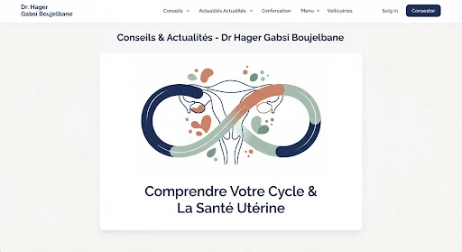
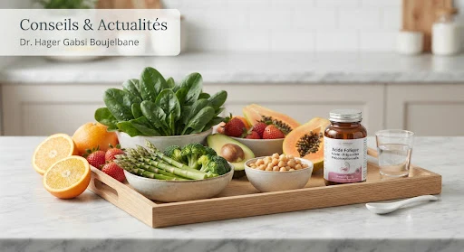

انقطاع الطمث
سنّ انقطاع الطمث في العوينة: التحضير للاستشارة
الهبات الساخنة والنوم وتغيّرات الدورة: موعد لمناقشة ما تشعرين به.
قراءة المقال →معلومات تساعدك على التحضير للاستشارة وفهم المواضيع المتعلقة بصحة المرأة.
الهبات الساخنة والنوم وتغيّرات الدورة: موعد لمناقشة ما تشعرين به.
قراءة المقال →
استشارة تحترم الخصوصية لمناقشة الوسائل المناسبة لاحتياجاتك.
قراءة المقال →
وقت لمناقشة التعافي وأسئلتك بعد ولادة الطفل.
قراءة المقال →
وصف الأعراض لمناقشة الفحوصات والمتابعة المناسبة.
قراءة المقال →يعتمد نوع الفحص وتوقيته على العمر والتاريخ الصحي والتوصيات المعمول بها. اسألي طبيبتك عما يناسب حالتك.
قراءة المقال ←
اتصلي بالعيادة بعد تأكيد الحمل لتنظيم الموعد الأول وتحضير أسئلتك وفحوصاتك السابقة إن وجدت.
قراءة المقال ←تُعرض الأبحاث العلمية للطبيبة في قسم مستقل.
المنشورات العلميةصورة توضيحية · معلومات عامة لا تعوّض استشارة طبية فردية.
اطّلعي على الأعمال والمداخلات العلمية للدكتورة هاجر القابسي بوجلبان.
Nasr MB, Bettaieb H, Najjar S, Hsayaoui N, Gebsi H, Othmen SB, Oueslati H, Mbarki C. Référence communiquée sur l’ancien site : page 117.
Congrès Paris Health and Women (CNGOF). Gebsi H. et al. Référence complète à confirmer auprès du cabinet.